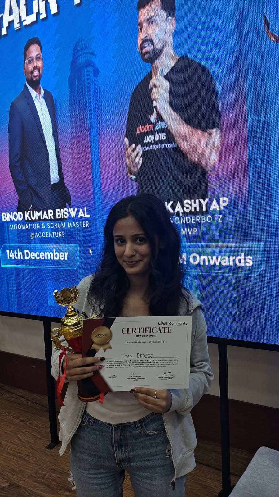
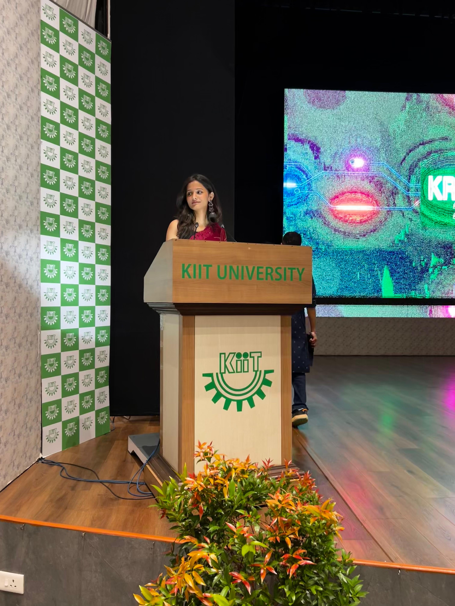
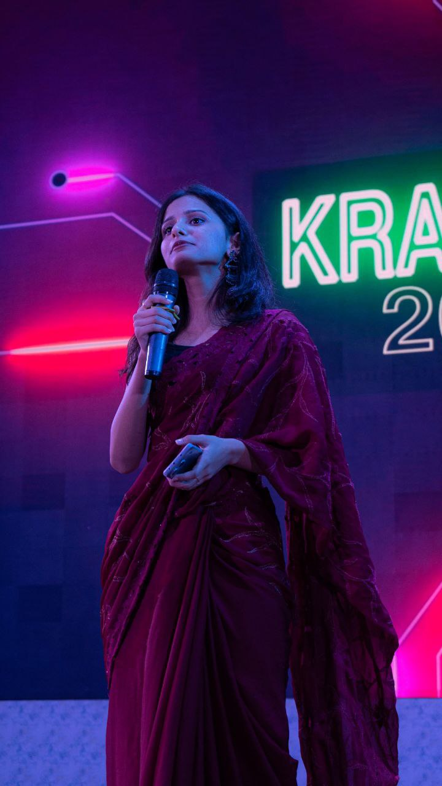
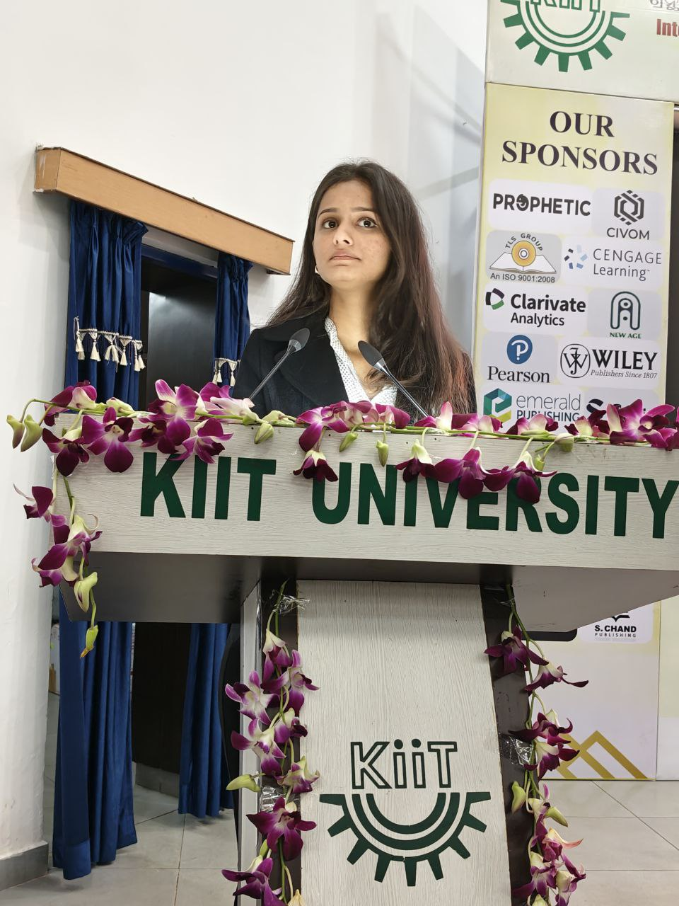

Crafting pixel-perfect, responsive web experiences with React, TypeScript & modern design thinking. I build interfaces that don't just look beautiful—they work seamlessly.
I'm an analytically driven and highly communicative developer with a strong foundation in data-driven problem solving, process thinking, and client-facing collaboration. I build responsive, interactive web experiences using React, TypeScript, and modern tooling.
Beyond coding, I'm an active member of my college's Anchoring Society, where I've hosted prestigious events including the 50th Librarian Awards Ceremony. I've also contributed to R&D Society initiatives and served as a script writer for major institutional events — strengthening my public speaking, leadership, and cross-functional collaboration skills.
Building modern, responsive interfaces
Currently exploring Node.js & Product Management
Anchor, script writer & R&D Society member
Inter-College Bot-Making Competition
Public speaking, stage presence, and cross-functional communication are not soft skills for me — they're a core part of who I am. I've anchored prestigious institutional events, scripted large-scale ceremonies, and led audiences ranging from peers to faculty and industry dignitaries.

Selected as official anchor for a prestigious KIIT milestone event, addressing faculty, dignitaries, and students with scripted and extemporaneous commentary.
KIIT University
Hosted a large-scale cultural production with hundreds in attendance, delivering live commentary and keeping energy high across a multi-act programme.
Featured Event
Anchored an academic event attended by representatives from major publishers including Wiley, Pearson, Clarivate Analytics, and Cengage Learning.
KIIT UniversityArchitecting a peer-to-peer thrift platform from scratch. Currently developing a custom seller onboarding workflow and the backend infrastructure to manage community-driven commerce.
Full-stack VC scouting app with search, filters, paginated table, company profiles, and command palette (Cmd+K). Implemented secure server-side AI enrichment through a Vercel serverless function using Groq (Llama 3), keeping API keys out of the browser.
Built a production-style knowledge management platform with capture, enrichment, and query workflows. Implemented semantic search, smart tagging, and AI-generated summaries backed by Next.js APIs, Prisma, and PostgreSQL.
Built a fully functional Point of Sale system with React, real-time data handling, and a professional dashboard. Designed a complete retail management experience including inventory management and sales tracking.
Designed a modern fintech interface with responsive UI components, a financial dashboard, and clean navigation focused on usability and visual consistency.
Recreated and coded a modern therapy website from a Figma-based template to strengthen pixel-perfect cloning skills. Built with a responsive, mobile-first layout, semantic structure, smooth section transitions, and strong visual hierarchy.
Developed a fully responsive platform with product listing, filtering, and dynamic UI components. Implemented cart, wishlist, authentication, and state management using Redux.
Built an interactive task management app using React functional components. Implemented editing, completion, deletion, and reusable hooks. Minimal and responsive interface.
Kalinga Institute of Industrial Technology (KIIT)
Bhubaneswar, Odisha
I'm always open to discussing new projects, creative ideas, or opportunities to be part of your visions.